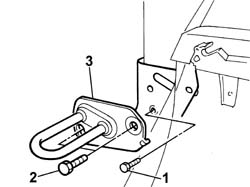
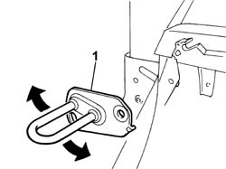

7050A58 rear seat squab panel - r + r
- Path
- Procedures > 70 FITTINGS > 7050 REAR SEATS > 7050A rear seat assembly > 7050A58 rear seat squab panel - r + r
- Kind
- repair procedure (removal / refitting; the operation number is the code)
- Applies to
- all engines; all production periods
- Interactive page
- https://sloeber94.github.io/elrnDB-fPnd/en/#/2753274
Applies to: all engines; all production periods
 Removing
Removing
 Refitting
RefittingLower the rear seat backrest.
1. Undo the upper bolt fixing the rear side panel cover.
Lift up the rear side panel cover until it is possible to gain access to the blts fixing the backrest striker.
2. Undo the retaining bolts.
3. Remove the rear seat backrest striker.

Applies to: all engines; all production periods
Refitting
RemovingFit the backrest striker in the housing and tighten the fixing bolts.
Lift up the backrest once or twice, placing it in the locked position on the striker.
Check that the seat locks and releases correctly.
1. The striker can be adjusted through the inner opening which is slotted and can be adjusted in the directions shown by the arrows.

Applies to: all engines; all production periods
Tighten the bolts fixing the striker to the bodyshell to torque.
 | Fastening | Component | Ø | Value (daNm) |
|---|---|---|---|---|
- | Bolt | REAR SEAT SQUAB DEVICE STRIKER | M10 x 1.25 | 4 |
Tighten the bolt fixing the side panel cover.
Lift up the seat backrest.